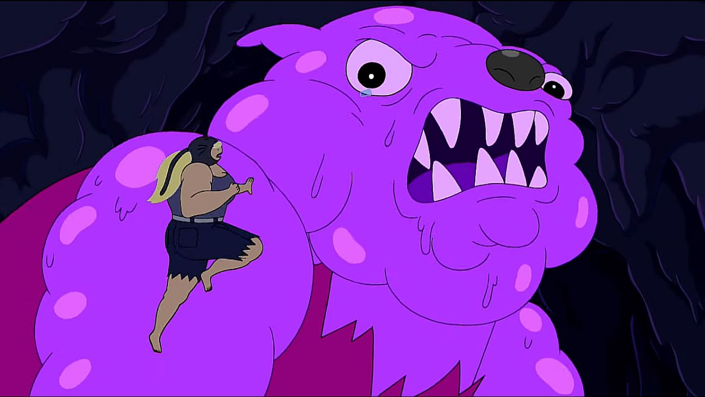

A série segue as aventuras de Finn, o Humano e o seu melhor amigo e irmão adotivo Jake, o Cão; que se aventuram na Terra de Ooo, num futuro pós-apocalíptico por volta de mil anos após a "Grande Guerra dos Cogumelos", sendo Finn presumidamente o último humano existente